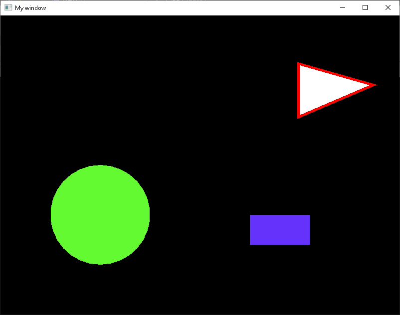
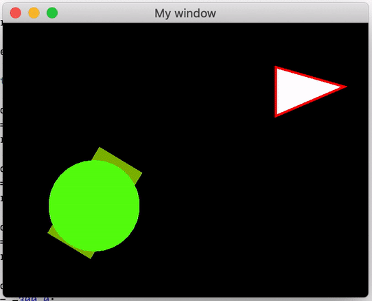

Lab 07 - Wprowadzenie do SFML
Lab 07 - Wprowadzenie do SFML
Używanie bibliotek zewnętrznych
Do tej pory na zajęciach korzystaliśmy z bibliotek standardowych dostarczanych wraz z zestawem narzędzi deweloperskich (SDK) dla danego systemu. Wykorzystanie biblioteki wymagało jedynie załączenia odpowiedniego pliku nagłówkowego w kodzie programu. W związku z faktem, że były to biblioteki standardowe, ich lokalizacja była znana dla kompilatora.
Dodanie zewnętrznej biblioteki wymaga modyfikacji ustawień projektu poprzez wskazanie gdzie dana biblioteka jest umieszczona. Ponadto, załączana przez nas biblioteka SFML będzie dostarczona w postaci skompilowanej. Oznacza to, że plik nagłówkowy będzie zawierał jedynie deklaracje funkcji, a ich implementacja dostarczona jest w postaci plików zawierających skompilowany kod, które należy wskazać linkerowi w celu poprawnego zbudowania projektu.
Tworzenie projektu wykorzystującego SFML
Wykorzystamy środowisko Qt Creator, skonfigurowane z kompilatorem GCC MinGW dla architektury 64-bit.
Pobierz aktualną wersję biblioteki SFML ze strony jej twórców (https://www.sfml-dev.org/download/sfml/2.5.1/). Wybierz
wersję odpowiednią dla używanego systemu, kompilatora i architektury (GCC 7.3.0 MinGW (SEH) - 64-bit).
Rozpakuj ją w wybrane miejsce na dysku, instrukcja zakłada lokalizację katalogu z biblioteką bezpośrednio na dysku
C:.
Stwórz projekt aplikacji zgodnie z instrukcją Tworzenie nowego
projektu. Umieść w projekcie plik main.cpp z poniższą zawartością:
#include <SFML/Window.hpp>
#include <SFML/Graphics.hpp>
int main() {
// create the window
sf::RenderWindow window(sf::VideoMode(800, 600), "My window");
// create some shapes
sf::CircleShape circle(100.0);
circle.setPosition(100.0, 300.0);
circle.setFillColor(sf::Color(100, 250, 50));
sf::RectangleShape rectangle(sf::Vector2f(120.0, 60.0));
rectangle.setPosition(500.0, 400.0);
rectangle.setFillColor(sf::Color(100, 50, 250));
sf::ConvexShape triangle;
triangle.setPointCount(3);
triangle.setPoint(0, sf::Vector2f(0.0, 0.0));
triangle.setPoint(1, sf::Vector2f(0.0, 100.0));
triangle.setPoint(2, sf::Vector2f(140.0, 40.0));
triangle.setOutlineColor(sf::Color::Red);
triangle.setOutlineThickness(5);
triangle.setPosition(600.0, 100.0);
// run the program as long as the window is open
while (window.isOpen()) {
// check all the window's events that were triggered since the last iteration of the loop
sf::Event event;
while (window.pollEvent(event)) {
// "close requested" event: we close the window
if (event.type == sf::Event::Closed)
window.close();
}
// clear the window with black color
window.clear(sf::Color::Black);
// draw everything here...
window.draw(circle);
window.draw(rectangle);
window.draw(triangle);
// end the current frame
window.display();
}
return 0;
}Spróbuj skompilować projekt. Kompilator zwróci błąd o braku pliku nagłówkowego
SFML/Window.h - nie ma go w ścieżkach systemowych, które przeszukuje. Dodaj brakującą ścieżkę do
ustawień projektu modyfikując plik .pro opisujący projekt:
INCLUDEPATH += "C:/SFML-2.5.1/include"Wymuś ponowne przetworzenie pliku .pro klikając prawym przyciskiem na nazwę projektu w drzewie i
wybierając Run qmake.
Ponownie spróbuj skompilować projekt. Tym razem błędy typu unresolved external symbol zwróci
linker - program "składający" ostateczny plik wykonywalny z wcześniej skompilowanych fragmentów.
Oznacza to, że funkcje, których użyto w programie zostały znalezione w plikach nagłówkowych, ale nie udało się
znaleźć ich skompilowanej implementacji - zawarta jest ona w plikach *.lib dostarczonych z
biblioteką. Dodaj do pliku *.pro dodatkowe parametry linkera zawierające ścieżkę, pod którą można je
znaleźć, a także listę plików, które mają zostać zlinkowane:
LIBS += -L"C:/SFML-2.5.1/lib"
CONFIG(debug, debug|release){
LIBS += -lsfml-audio-d -lsfml-graphics-d -lsfml-network-d -lsfml-system-d -lsfml-window-d
} else {
LIBS += -lsfml-audio -lsfml-graphics -lsfml-network -lsfml-system -lsfml-window
}Ponownie uruchom qmake, a następnie skompiluj projekt. Kompilacja powinna przebiec bez błędów, jednak nadal nie będzie możliwe uruchomienie programu.
Wynika to z faktu, że biblioteki, które dołączyliśmy do projektu nie są wkompilowane w plik wykonywalny - są łączone dynamicznie (ang. DLL - Dynamic-Link Library) i ładowane z zewnętrznych plików w trakcie uruchamiania. Mogą być dzięki temu współdzielone pomiędzy wiele programów, które dzięki temu mają mniejszy rozmiar. Pliki DLL można umieścić w katalogach systemowych lub w katalogu, gdzie znajduje się plik wykonywalny programu (sposób preferowany).
Skopiuj pliki .dll z katalogu bin biblioteki SFML do katalogu, w którym znajduje się
plik wykonywalny (exe) utworzonej przez Ciebie aplikacji. W przypadku środowiska Qt Creator, katalog
kompilacji domyślnie znajduje się obok katalogu projektu i ma nazwę
build-<nazwa_projektu>-<nazwa_kitu>-<nazwa_wydania>, np.
build-sfml_hello-Desktop_Qt_5_10_1_MSVC2017_64bit-Debug. Następnie uruchom projekt. Poprawnie działający
program powinien wyświetlić następujące okienko:

Biblioteka SFML
SFML jest wieloplatformową biblioteką ułatwiających tworzenie programów wykorzystujących grafikę dwuwymiarową, np. prostych gier. Zawiera moduły pozwalające na m.in. generowanie grafiki - rysowanie prostych figur geometrycznych wraz z teksturami, obsługę wejścia klawiatury/myszy, dźwięku i sieci.
Dokumentację API biblioteki można znaleźć pod adresem: https://www.sfml-dev.org/documentation/2.5.1/
Tutoriale opisujące podstawową funkcjonalność są dostępne poniżej: https://www.sfml-dev.org/tutorials/2.5/
Wszystkie zasoby biblioteki znajdują się w przestrzeni nazw (ang. namespace) sf. Aby
uniknąć zaśmiecania głównej przestrzeni nazw, będziemy unikać stosowania dyrektyw
using namespace ..., a zamiast tego poprzedzać odpowiednie nazwy sf::,
std:: itd.
W przykładzie powyżej przedstawiono typowy przebieg działania aplikacji wykorzystującej SFML. Obejmuje on
inicjalizację okna (klasa sf::RenderWindow) i zasobów wykorzystywanych w programie (w tym przypadku
trzy kształty), a następnie wykonywanie cyklicznie pętli programu, której każdy przebieg prowadzi do wygenerowania
jednej klatki obrazu, aż do chwili zamknięcia głównego okna.
Wewnątrz pętli sprawdzana jest kolejka zdarzeń (naciśnięcia klawiszy, ruch myszy itd.), a następnie generowana jest od postaw klatka obrazu: czyszczone jest "płótno" okna, rysowane są kolejne obieky, a ostatecznie podmieniany jest framebuffer.
🛠🔥 Zadanie 🛠🔥
Przeanalizuj działanie przykładowego kodu. Zmień rozmiar i ułożenie elementów na scenie, spróbuj dodać kolejne. Co się dzieje, kiedy zmienisz rozmiar okna po uruchomieniu programu? W jakich jednostkach są wyrażone rozmiary i położenie obiektów na scenie?
Pomiar czasu, animacje
Animacja obiektów polega na wyświetleniu nieznacznie zmienionego obiektu w każdej klatce obrazu (w każdym przebiegu głównej pętli) tak aby uzyskać wrażenie płynnego ruchu.
Aby animacja obiektów była płynna, a jej tempo niezależne od liczby wyświetlanych klatek na sekundę, musimy dostosować kolejne klatki animacji, na przykład na jeden z poniższych sposobów:
- mierzyć czas jaki upłynął od narysowania ostatniej klatki i na tej podstawie ustalić krok animacji;
- wywoływać poruszanie obiektami z oddzielnego wątku, ze stałą częstotliwością;
- założyć stałą liczbę klatek na sekundę - w tym przypadku, jeśli komputer nie nadąży z obliczeniami lub wyświetlaniem, animacja zwolni.
W dzisiejszym przykładzie wykorzystamy pierwszą metodę. Do pomiaru czasu możemy wykorzystać klasę
sf::Clock. Jest to zegar działający na zasadzie stopera, który zaczyna odmierzanie czasu w momencie
utworzenia obiektu. Pozwala on na odczytanie czasu jaki upłynął oraz restart odmierzania - patrz dokumentacja
sf::Clock.
Prosty timer odmierzający czas, jaki upłynął pomiędzy sąsiednimi klatkami można uzyskać w następujący sposób:
sf::Clock clock;
while (window.isOpen())
{
sf::Time elapsed = clock.restart();
...
}Metoda sf::Clock::restart restartuje licznik i zwraca czas, jaki upłynął od ostatniego restartu w
formacie obiektu sf::Time - patrz dokumentacja sf::Time.
Z obiektu możemy odczytać czas w różnych jednostkach: sf::Time:asSeconds,
sf::Time::asMiliseconds, sf::Time::asMicroseconds.
🛠🔥 Zadanie 🛠🔥
Zapoznaj się z dokumentacją klasy sf::Clock. Dodaj do programu obiekt sf::Clock w taki
sposób, aby móc zmierzyć czas pomiędzy kolejnymi przebiegami głównej pętli. Wyświetl czas w konsoli, w
mikrosekundach. Ile klatek na sekundę rysuje Twój program?
Poruszanie obiektem
Wszystkie obiekty "rysowalne" w bibliotece SFML mają zestaw metod pozwalających na ich manipulację
(transformacje) na płaszczyźnie ekranu - przemieszczanie, skalowanie, obracanie. Metodą pozwalającą na poruszanie
względem bieżącej pozycji jest move(float offsetX, float offsetY).
🔨 🔥 Zadanie 🔥 🔨
Utwórz w programie dwie zmienne reprezentujące prędkość jednego z obiektów - składową poziomą (x) i pionową (y),
np. rectangle_velocity_x oraz rectangle_velocity_y. Będą one oznaczały prędkość obiektu
w pikselach na sekundę. Nadaj im wartości odpowiednio 50 i 150.
Wykorzystaj czas obliczony w poprzednim zadaniu i w każdym przebiegu pętli przesuwaj jeden z obiektów metodą
move o dystans, jaki powinien przebyć w zmierzonym czasie przy zadanej prędkości (przypomnij sobie z
fizyki wzór na drogę przy ruchu jednostajnym).
Następnie dodaj zmienną rectangle_angular_velocity opisującą prędkość obrotu figury wokół własnej
osi (w stopniach na sekundę) i nadaj jej wartość 10. Wykorzystaj metodę rotate obiektu, aby
spowodować jego obracanie się.
Uwaga: w przeciwieństwie do funkcji trygonometrycznych w bibliotece standardowej, funkcje w SFML operują na kątach wyrażonych w stopniach.
Proste kolizje
Wykrywanie kolizji pomiędzy obiektami na scenie stanowi fundament mechaniki wielu gier czy aplikacji wykonujących proste symulacje fizyki. Ponieważ dokładne obliczenia kolizji wielu nieregularnych obiektów byłyby bardzo zasobochłonne, stosuje się pewne uproszczenia, np. przybliżanie kształtu obiektów prostokątem/kołem (na płaszczyźnie) lub prostopadłościanem (w przestrzeni trójwymiarowej).
Obiekty, które narysowaliśmy mają metodę getGlobalBounds(), która zwraca prostokąt
sf::FloatRect stanowiący obrys figury, we współrzędnych okna. Prostokąt przechowuje współrzędne lewej
i górnej krawędzi oraz swoją szerokość i wysokość:
sf::FloatRect rectangle_bounds = rectangle.getGlobalBounds();
std::cout << rectangle_bounds.top << " " << rectangle_bounds.left << " " ;
std::cout << rectangle_bounds.width << " " << rectangle_bounds.height << std::endl;🛠🔥 Zadanie 🛠🔥
Wykorzystując obrys obracającego się prostokąta, napisz zestaw warunków sprawdzających, czy dotyka on jednej z krawędzi ekranu. Jeśli tak, spowoduj jego "odbicie" poprzez zmianę zwrotu prędkości w odpowiednim kierunku, w zależności od napotkanej ściany. Możesz przyjąć, że pole odbijania ma stałe wymiary.
Kolory
Kolory w SFML opisywane są w przestrzeni RGB (ang. red, green, blue). Każda składowa koloru to liczba 8-bitowa bez znaku (zakres 0-255). Jest to bardzo często spotykany sposób reprezentacji koloru w grafice komputerowej, nazywany też czasem np. RGB888 lub RGB 24-bit.
Podstawowe figury w SFML mają kolor obrysu oraz wypełnienia.
Przykładowo:
rectangle.setFillColor(sf::Color(255, 255, 0));spowoduje zmianę koloru wypełnienia prostokąta na żółty.
🛠🔥 Zadanie 🛠🔥
Dodaj po każdym odbiciu zmianę koloru prostokąta na losowy, tak aby uzyskać efekt podobny do poniższego:

Autorzy: Jakub Tomczyński, Dominik Pieczyński, Tomasz Mańkowski